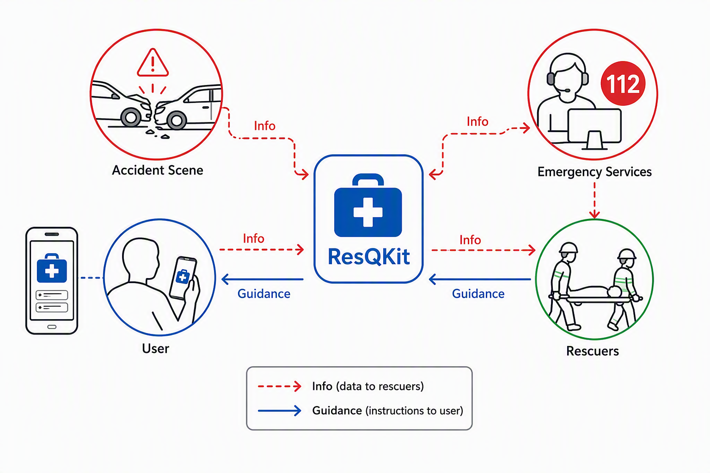
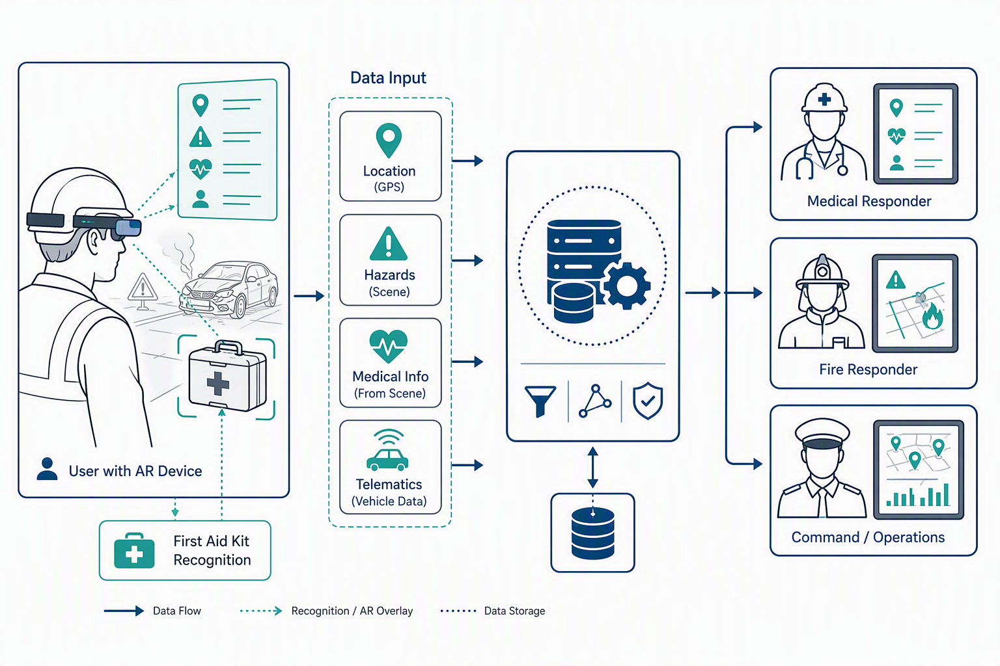
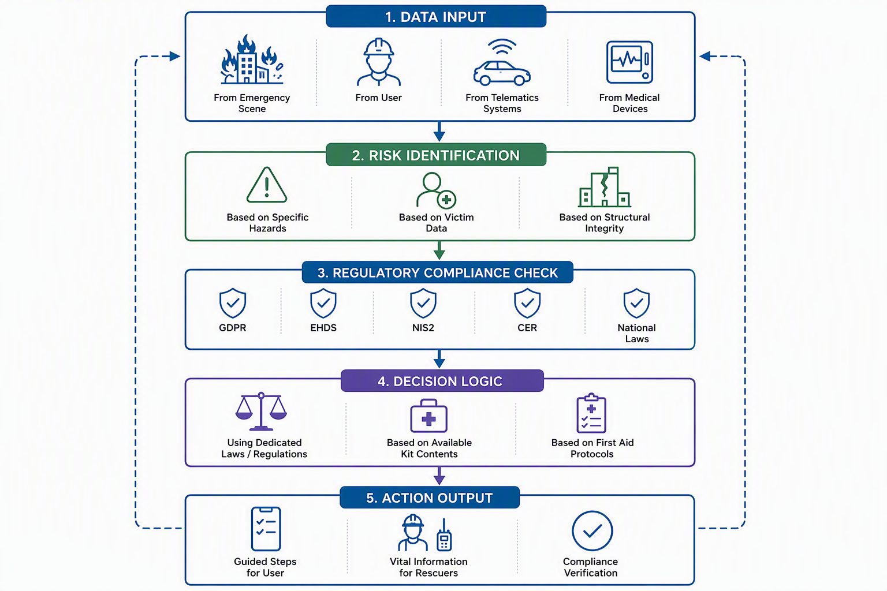
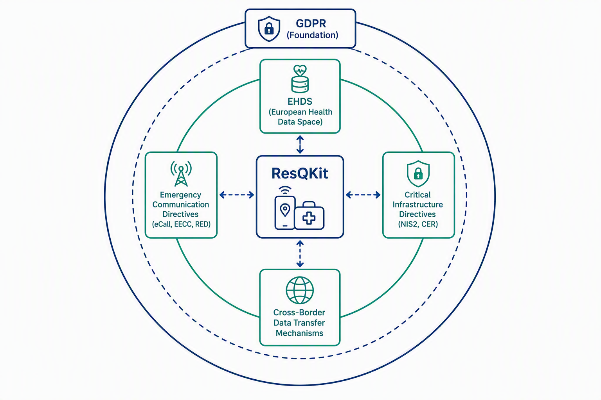
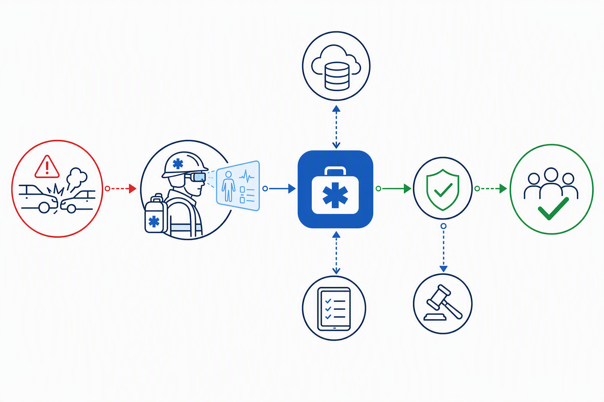

ResQKit is introduced as an innovative, complementary safety tool designed to significantly enhance emergency response and aid in critical accident scenarios. While existing emergency communication channels, such as eCall and the universal 112 emergency number, are vital, they often encounter limitations, including managing false alarms, resolving callback issues, or acquiring precise and comprehensive information efficiently during a crisis 1. Furthermore, individuals frequently face gaps in preparedness, struggling to provide immediate and effective first aid or communicate crucial details to rescuers in high-stress situations. ResQKit is engineered to bridge these gaps, ensuring that vital information is swiftly conveyed to emergency services and empowering users with essential guidance and knowledge when it matters most.
The primary purpose of ResQKit is to facilitate rapid and informed decision-making in emergencies. It aims to overcome the inherent challenges faced by users who may lack training in first aid or familiarity with available safety equipment, which can lead to difficulties in handling complex data collection seen in comprehensive assistance services 4. By doing so, ResQKit acts as a crucial link, enabling a more streamlined and effective response from rescuers while supporting on-site actions by the public.
Core to ResQKit's functionality is its ability to utilize augmented reality (AR) for recognizing and providing insights into the contents of various emergency kits—whether in vehicles, offices, marine environments, or mountainous regions. The application also excels at identifying potential risks and providing context-specific guidance based on dedicated legal frameworks rather than speculative information, thereby accelerating user decisions. This design prioritizes compliance with relevant EU regulations, ensuring data protection and operational integrity in its mission to augment safety and save lives, building upon foundational frameworks like GDPR 5.

ResQKit is designed to enhance emergency response by addressing critical communication gaps and empowering users with vital, accurate, and timely information. Traditional methods of communication, often relying on oral or written reports via radio or phone, are prone to delays, misunderstandings, and inaccuracies, while caller-provided information can be unreliable and slow 6. ResQKit directly tackles these deficiencies by ensuring that comprehensive and precise information reaches emergency responders efficiently, facilitating effective decision-making and safeguarding public safety 9.
The app ensures critical data points are shared seamlessly with relevant responders. For instance, exact location is crucial, with telematics systems providing precise geographical coordinates in vehicle crashes 6. The number of victims and type of injury are primary pieces of information for medical teams and dispatch centers, allowing for appropriate resource allocation and preparation for specific patient needs 11. Access to a victim's medical history, including pre-existing conditions, allergies, and current medications, is enabled through potential links to electronic health records (EHR) or smartwatches 6. Furthermore, ResQKit communicates specific hazards, such as chemical, biological, radiological, nuclear, and explosive (CBRNE) materials 15, structural integrity issues and potential for collapse 16, or environmental dangers like air contaminants and extreme weather 18. This detailed information is critical for diverse responder types, including medical personnel for patient care coordination 13, fire/rescue/HAZMAT teams for hazard identification and extrication 9, structural engineers for damage assessments 16, and incident command for comprehensive operational oversight and resource allocation 17.
ResQKit also empowers users in first aid by offering real-time, step-by-step guidance for critical procedures. For individuals with limited or no medical training, the app can provide immediate instructions for actions such as Cardiopulmonary Resuscitation (CPR) and Automated External Defibrillator (AED) usage, or managing severe hemorrhage with devices like tourniquets 19. These applications employ visual prompts and audio cues, sometimes adapting to the user's learning pace and feedback preferences 20. Examples such as LifeSavAR and HoloCPR provide AR-guided instructions for such procedures 19. This guidance is contextualized for various kit types, whether in a car, office, maritime setting, or mountains, leveraging insights from available first-aid kits.
To achieve this, ResQKit utilizes Augmented Reality (AR) for kit and object recognition. AR systems overlay digital information onto the real world, allowing users to interact with both their physical environment and computer-generated content 22. This capability enables the app to identify and categorize specific objects, such as a first-aid kit or a fire extinguisher, to trigger contextual AR content dynamically 23. This enhances situational awareness and decision-making for users and responders alike, reducing on-site confusion and cognitive overload by providing timely and relevant information, including geographic references and tasks 25. AR smart glasses, for example, can give paramedics hands-free access to critical data like patient history, allergies, medications, and real-time vitals directly in their field of view 26. They also facilitate "see-what-I-see" remote collaboration, streaming live video to remote physicians for immediate diagnostic guidance and treatment procedures 26.
ResQKit leverages Computer Vision (CV) and Artificial Intelligence (AI) as core underlying technologies. Computer Vision acts as the "eyes" and "brain" of AR, enabling devices to "see" and "understand" their environment through techniques like object recognition, tracking, Simultaneous Localization and Mapping (SLAM), depth sensing, and scene understanding 24. This allows for accurate placement of virtual elements and credible interaction with real-world objects. AI powers adaptive guidance systems, providing real-time tips and error hints, and can enable smarter AR guidance that adjusts to user performance and learning paths 29.

Building upon its core functionality of providing critical information to rescuers and assisting first-aid efforts, ResQKit further enhances emergency response through intelligent decision support and robust risk mitigation strategies. The application's mechanism for identifying and mitigating risks is rooted in sophisticated contextual analysis, leveraging real-time data and a deep integration of relevant regulatory frameworks.
ResQKit proactively identifies potential risks by analyzing a wide array of contextual data points specific to an incident. For instance, in motor vehicle crashes, it processes telematics data such as exact location, time, severity of the crash, airbag deployment, and occupant count6, alongside vehicle type, especially for electric or autonomous vehicles, to identify specific extrication hazards6. For HAZMAT incidents, the system integrates immediate agent identification, facility risk information, and environmental monitoring data, assessing risks like chemical properties, flammability, corrosivity, and toxicity9. Similarly, in structural collapses, it evaluates building damage distribution, structural integrity, and utility status to understand immediate dangers and potential for further collapse16. This comprehensive contextual understanding enables ResQKit to provide highly specific risk mitigation advice, contrasting sharply with generic recommendations and ensuring responders are prepared for the exact challenges they face7.

A cornerstone of ResQKit's intelligent decision support is the direct integration of dedicated EU and Romanian laws and regulations. Unlike systems that offer general advice, ResQKit embeds compliance requirements from instruments such as the General Data Protection Regulation (GDPR) 5, the European Health Data Space (EHDS) 32, the NIS2 Directive, and the Critical Entities Resilience (CER) Directive 33. This ensures that all proposed actions and information exchanges are legally sound and compliant. For example, when processing personal or health-related data, ResQKit automatically identifies the necessary legal basis under GDPR Article 6 or specific conditions for sensitive data under Article 9(2), such as explicit consent or vital interests34. For health data reuse within the EHDS framework, the application adheres to limitations on permitted purposes, explicitly prohibiting use for marketing or detrimental decisions against individuals35. This direct regulatory mapping significantly accelerates decision-making by eliminating the need for manual legal review in high-stress situations and ensuring that guidance is always accurate and relevant, preventing "hallucinations" or misinterpretations of legal requirements.
Furthermore, ResQKit ensures the accuracy and relevance of its guidance by adhering to principles like data minimization, processing only what is adequate, relevant, and necessary for the intended purpose36. It leverages the mandates of the European Electronic Communications Code (EECC) and the Radio Equipment Directive (RED) to ensure accurate caller location information (via Wi-Fi and GNSS) is available to Public Safety Answering Points (PSAPs), which is critical for efficient response2. This accuracy extends to providing real-time patient count and triage status in mass-casualty incidents through technologies like digital triage tags, greatly improving resource allocation compared to traditional reporting8. By adopting and mandating common data standards, such as HL7 FHIR for health data under the EHDS, ResQKit facilitates consistent and machine-readable health data exchange, bolstering interoperability and the precision of medical guidance32.
ResQKit's unwavering commitment to EU and Romanian regulatory compliance underpins its operational security and data handling practices. The application is designed with "Privacy by Design and by Default" (GDPR Article 25) 38, incorporating measures like pseudonymization and encryption, particularly crucial for cross-border data transfers to mitigate risks associated with third-country laws40. Data Protection Impact Assessments (DPIAs) are conducted for any high-risk processing activities involving sensitive data38. The EHDS framework further specifies secure processing environments for health data, emphasizing data subject rights including access, rectification, and control over their health information32. Even for specialized services like eCall, ResQKit respects specific data protection rules, such as limiting data collection and storage periods and requiring explicit consent for Third-Party Service (TPS) eCall systems that process additional personal data43. This multi-layered approach ensures that ResQKit not only assists in emergencies but does so with the highest standards of data protection and operational integrity.
ResQKit is meticulously designed to operate within the robust regulatory landscape of the European Union, specifically addressing emergency services, stringent data privacy, and digital safety. This commitment extends to ensuring full compliance with Romanian national laws governing emergency response and medical assistance applications, thereby building reliability, fostering user trust, and securing official recognition.
At the core of ResQKit's data handling practices is the General Data Protection Regulation (GDPR) - Regulation (EU) 2016/679. This directly applicable EU law governs the processing of personal data for all organizations established in the EU or those processing data of data subjects within the Union 5. For emergency applications like ResQKit, which handle sensitive personal and health-related data, adherence to GDPR is paramount.
Processing personal data within ResQKit will always be based on clearly identified legal bases. For emergency situations, Article 6(1)(d) (vital interests of the data subject) or (e) (public interest) may be relevant. When dealing with "special categories" of personal data, such as health information, specific conditions under Article 9(2) are crucial, including explicit consent from the individual, substantial public interest, or vital interests 34.
ResQKit's operation will embed GDPR's core principles:
The roles of "controller" (determining processing purposes) and "processor" (processing data on behalf of the controller) will be clearly defined within ResQKit's operational framework, aligning with GDPR requirements 5.
ResQKit's functionalities are shaped by several EU sector-specific regulations:
Emergency Communications:
Critical Infrastructure Security: ResQKit recognizes that the underlying communication channels and data infrastructure supporting emergency response are critical. Compliance with the NIS2 Directive (Network and Information Systems Directive) and the Critical Entities Resilience (CER) Directive will strengthen the cybersecurity and resilience of ResQKit's supporting systems, positioning them as reliable components of critical infrastructure 33.
Health Data Governance:
EU Civil Protection Mechanism: ResQKit's function of communicating vital information in emergencies aligns with the EU Civil Protection Mechanism, which coordinates assistance in crises and uses the Common Emergency Communication and Information System (CECIS) for real-time information exchange 45.
The GDPR's robust personal data protection rules extend to transfers outside the EU/EEA (Chapter V, Articles 44-50), ensuring consistent safeguards regardless of data location 47. ResQKit will diligently adhere to these rules:
| Transfer Mechanism | Description/Conditions | GDPR Article Reference(s) |
|---|---|---|
| Adequacy Decisions | European Commission determines if a non-EU country offers an adequate level of data protection; data can flow without additional safeguards. Subject to periodic review. | Article 45 |
| Standard Contractual Clauses (SCCs) | Pre-approved model data protection clauses for transfers to countries without an adequacy decision. Create contractual obligations for data exporter and importer. Schrems II judgment requires Transfer Impact Assessment (TIA) and supplementary measures. | Chapter V (Articles 44-50) |
| Binding Corporate Rules (BCRs) | Internal policies for multinational corporate groups, approved by data protection authorities, to ensure intra-group data transfers comply with EU standards. Complex, suitable for large organizations. | Chapter V (Articles 44-50) |
| Derogations for Specific Situations | Limited exceptions for transfers in specific circumstances without an adequacy decision or SCCs (e.g., explicit consent from the individual, necessity for performing a contract). Not intended for systematic or large-scale transfers. | Article 49 |
ResQKit's compliance is operationalized through a suite of technical and organizational measures designed to protect data throughout its lifecycle:

ResQKit acknowledges the inherent challenges in regulatory compliance, particularly in emergency contexts, and commits to best practices:
Beyond the comprehensive EU framework, ResQKit will undertake a thorough analysis and ensure full compliance with specific Romanian national laws governing emergency response and medical assistance applications. This includes aligning with local interpretations of EU directives and any unique national legislative requirements, thereby ensuring the application's legal standing and operational effectiveness within Romania. This local integration is critical for official recognition and trust within the national emergency services ecosystem.
ResQKit emerges as a vital, complementary tool designed to bridge critical gaps in emergency response, ultimately fostering safer environments and improving accident outcomes. The application’s core strength lies in its ability to deliver enhanced communication by leveraging accurate, timely data from sources like vehicle telematics and advanced caller location information 6. This ensures that emergency services receive precise incident details promptly, integrating seamlessly with existing emergency channels.
Furthermore, ResQKit facilitates informed first aid through augmented reality (AR) guidance, offering step-by-step instructions for critical procedures such as CPR and AED usage 19, and assisting users in recognizing and utilizing available first aid kit contents 24. This empowers individuals, even those with limited medical training, to act effectively during emergencies. The provision of comprehensive information, including victim counts, injury types, and medical histories, is crucial for rescuers to prepare and allocate resources efficiently 11.
The app’s intelligent integration supports rapid decision-making for both lay responders and professionals. AR systems enhance situational awareness for first responders by providing critical information like patient history, allergies, and treatment protocols directly in their field of view, reducing on-site confusion and cognitive overload 26. This immediate access to essential data, from exact incident locations to specific hazards, is vital for efficient response and effective decision-making 9.
Crucially, ResQKit is engineered with robust attention to regulatory compliance, adhering to fundamental EU legislative instruments such as the General Data Protection Regulation (GDPR) 5, eCall mandates 43, and the European Electronic Communications Code (EECC) 33. The integration of the European Health Data Space (EHDS) principles further ensures secure and interoperable handling of health-related data 32, prioritizing data protection by design and default, and mitigating compliance challenges in cross-border data transfers 40.
By enhancing communication, informing first aid, and accelerating decision-making while upholding strict regulatory standards, ResQKit significantly contributes to improving accident outcomes and creating safer communities. Studies have shown that AR-based solutions can lead to faster skill acquisition, improved retention, decreased reaction times, and increased procedural accuracy in emergency scenarios 26.
The future trajectory for ResQKit includes exploring deeper integration with advanced AI for dynamic, personalized guidance and adaptive learning paths 29. Further development could also focus on enhanced interactivity, including haptic feedback and multi-user training scenarios, and expanding its application to even more complex emergency situations 29. Integration with existing medical protocols and hospital information systems via standards like FHIR presents a powerful avenue for continuous evolution, ensuring ResQKit remains at the forefront of emergency assistance technology 26.
